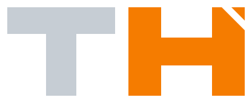
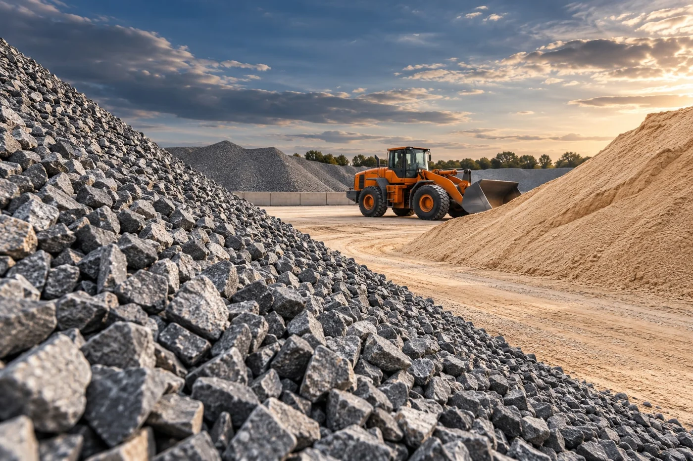
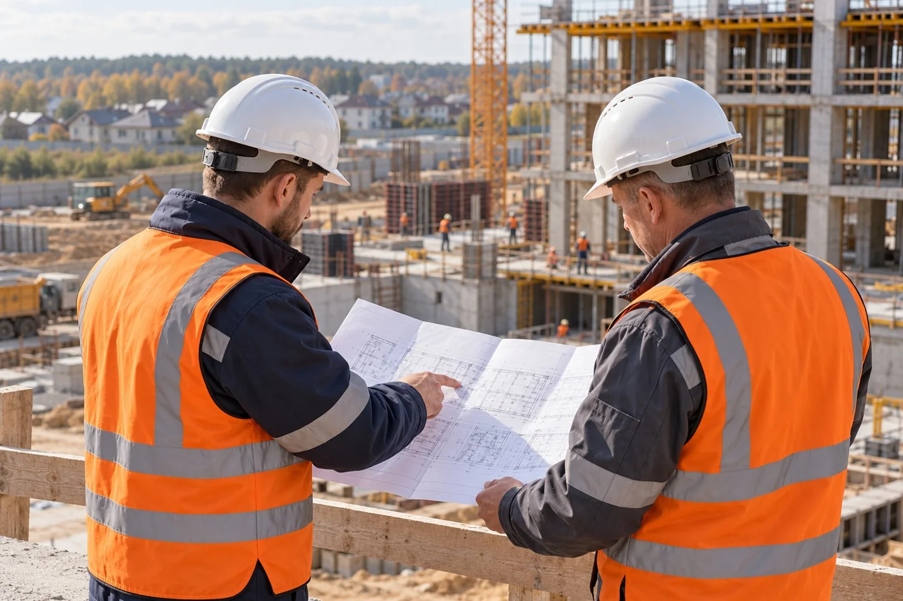

Жилой комплекс
Одинцовский округ, Московская область
17автовышек высотой 45 м
4месяца работы
Комплекс техники для высотных и монтажных задач. Организация рабочих смен продолжительностью 11 часов.

СтройПроектТЕХНИКА · МАТЕРИАЛЫ · РАБОТЫ+7 (969) 280-62-45МОСКВА И МОСКОВСКАЯ ОБЛАСТЬ
Спецтехника, материалы и строительные работы.
От одной машины до организации целого этапа — в Москве и Московской области.
Расскажите о задаче — подберём состав заказа
и согласуем стоимость, сроки и условия.
Вращайте мышью или пальцем
Нажмите, чтобы двигать выбранную часть. Повторное нажатие останавливает движение в текущем положении. Клавиши со стрелками позволяют управлять точнее.
ОДИН ПАРТНЁР ДЛЯ ЗАДАЧ СТРОЙКИ
Увязываем подачу машин, поставки и выход бригад. Вы задаёте объём и график — мы подбираем ресурсы под условия площадки.
01 / СПЕЦТЕХНИКА
Подбираем по условиям объекта: глубине, высоте, нагрузке, доступу и графику. Комплектуем техникой отдельные работы и целые этапы.
Модель и оснащение · количество смен · оператор · ГСМ · доставка и условия площадки
02 / МАТЕРИАЛЫ И ДОСТАВКА
Поставляем нерудные, вторичные и сопутствующие материалы. Подбираем вид, фракцию и объём по вашей задаче.

Самосвалы и самосвальные полуприцепы. Одна партия или регулярные поставки.
03 / СТРОИТЕЛЬНЫЕ РАБОТЫ
От котлована до подпорных стен и благоустройства. Выполняем согласованный объём по проекту, с техникой, бригадами и организацией работ.

ЛЮДИ, КОТОРЫЕ ДЕЛАЮТ РАБОТУ
Формируем состав команды под этап и график. Инженер или прораб координирует работы на площадке.
ПРИМЕРЫ НАШЕЙ РАБОТЫ
Обеспечение техникой жилого строительства, промышленного объекта и складского комплекса.
Одинцовский округ, Московская область
17автовышек высотой 45 м
4месяца работы
Комплекс техники для высотных и монтажных задач. Организация рабочих смен продолжительностью 11 часов.
Москва
20единиц техники в комплексе
15месяцев проекта
Обеспечение строительства сырьевого предприятия. Работа с учётом пропускного режима и требований промышленной безопасности.
Коледино, Московская область
3бульдозера Shantui SD16
2месяца работы
Доставка техники на 60 км от МКАД. Две смены по 10 часов, организация проживания и питания операторов.
КАК МЫ РАБОТАЕМ
Согласуем состав заказа и условия до начала работ. Остаёмся на связи в ходе выполнения.
Объём, адрес, сроки, проект и условия площадки.
Техника, материалы, бригады и порядок выполнения.
Стоимость, график, состав работ и документы.
Подача, поставки, координация и сопровождение заказа.
ПЕРЕД НАЧАЛОМ
Да. Работаем с отдельными задачами и комплексным обеспечением объекта. Можно заказать технику, материалы или согласованный объём строительных работ.
Тип и модель, оснащение, количество смен, удалённость и условия объекта. В расчёте согласуем оператора, ГСМ, доставку и состав заказа.
Песок, щебень, гравий, смеси и отсев, вторичные материалы, грунты, каменные материалы и керамзит. Укажите нужный материал и требования — уточним фракцию, объём и доставку.
Понадобятся проект или техническое задание, ведомость объёмов, сроки и условия площадки. Если задача пока сформулирована в общих чертах, начнём с её обсуждения.
Да, график подачи техники, поставок и выхода бригад согласуем под этапы вашего объекта. Режим работы и требования к доступу учитываем при подготовке заказа.
Москва и Московская область. Для расчёта доставки и подачи укажите точный адрес и особенности подъезда.
ДАВАЙТЕ ОБСУДИМ ВАШ ОБЪЕКТ
Расскажите, что нужно сделать.
Подберём технику, материалы и формат работ.
ЗАПРОС ПОДГОТОВЛЕН
Запрос ещё не отправлен. Откройте WhatsApp и нажмите «Отправить».